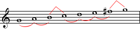

Tiết 2: Giọng G - Tập đọc nhạc số 1: Cây sáo
Nhạc: Ba Lan, Lời Việt: Hoàng Anh
Yêu cầu:
_ Xem video lần 1, nghe kỹ phần giai điệu mẫu.
_ Xem video lần 2, xướng âm nốt đúng cao độ và trường độ như giai điệu.
_ Kết hợp đọc nốt và hát lời.
Giọng G (Sol trưởng)
_ Sol trưởng (được ký hiệu là G) là một cung trưởng dựa trên nốt Sol (G), bao gồm các nốt: Sol, La, Si, Đô, Rê, Mi và Fa thăng.
Bộ khóa của nó có một dấu thăng (Fa thăng) và không có dấu giáng.
_ Giọng song song với G là Mi thứ (Em), giọng cùng tên với G là Sol thứ (Gm)
_ Giọng G được dùng phần lớn trong các bài Quốc ca như "God saves the Queen" - quốc ca Anh và các nước trong khối thịnh vượng chung, "God defend New Zealand" - quốc ca thứ 2 của New Zealand, "Tiến quân ca" - Việt Nam...
_ Theo Spotify, giọng G được dùng phổ biến sau giọng C (Đô trưởng).